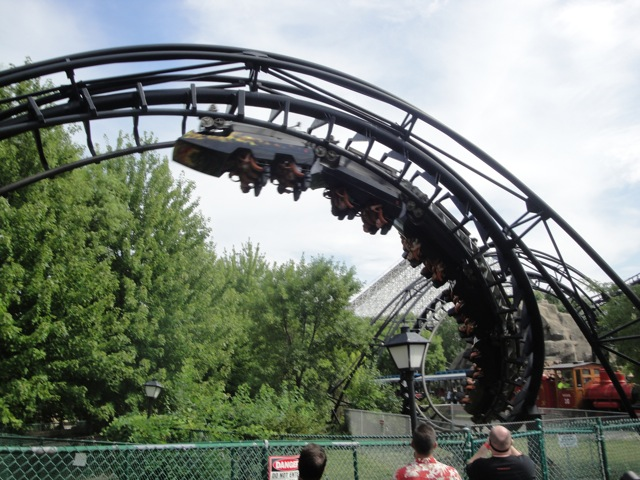
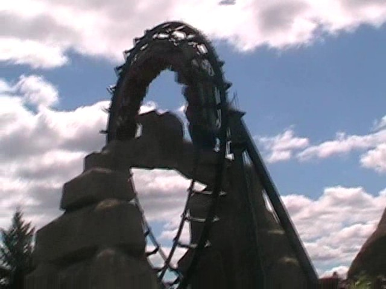

| |
Demon Review

We're here at Six Flags Great America. Today's ride we'll be reviewing for you is Demon. In 2006, I rode Demon at California's Great America, and it SUCKED!!!!!! So when I first went to Six Flags Great America, I was not looking foreword to this ride. You first hop in the trains and away you go. You first go through a tunnel. But to my suprise, all the effects in the tunnel were working. =O Yeah, I was shocked. For the most part, it was actually pretty cool. It was like one of those Japanese Cartoons that people complained about because someone apparently got a seizure from it. While the Demon here has no soundtrack, I'll gladly trade California's soundtrack for Illinois' flashing lights. After that, we climb up the lifthill. After climbing up the lifthill, we go around a turn. From the turn, you can see past the trees and get a great view of Raging Bull. But that's all gone as we plummet down the first drop. While it's nothing special or cool, it's at least fun. Then we go through Loop #1. Its a fun loop with a few good Positive Gs. Then we go through Loop #2. This is exactly like Loop #1. Except this one goes through a rock. I was pretty pissed when I found out that California's Demon didn't have the rock, so I was very happy to see it on the Chicago Demon. And it's a cool element. After Loop #2, we go into the tunnel. While I'm happy California Demon removed the trims in their tunnel, this Demon is still better because not only did it never have trims, but we also have more seizure lights. HOORAY!!!! =) We then rise up and head around a turn. Then we pass through the demon's mouth where we head into a double corkscrew. The Corkscrews are nothing special. But they are fun. After going through those two corkscrews, we rise up into a forceless helix where we glide into some straight track that's supposed to be the brake run. While this ride still isn't that great, it's above average for a loopscrew coaster and definetly the better of the two Demons. I'd recommend this if you're trying to go upsidedown for the first time or simply like loopscrews.
6/10
Location: Six Flags Great America
Opened as Turn of the Century in 1976.
Modified into Demon in 1978.
Built by: Arrow
Last Ridden: August 10, 2008
I have ridden this exact same ride at the following parks.
California's Great America
Demon Photos



Home
|